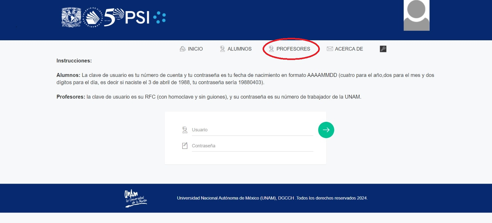
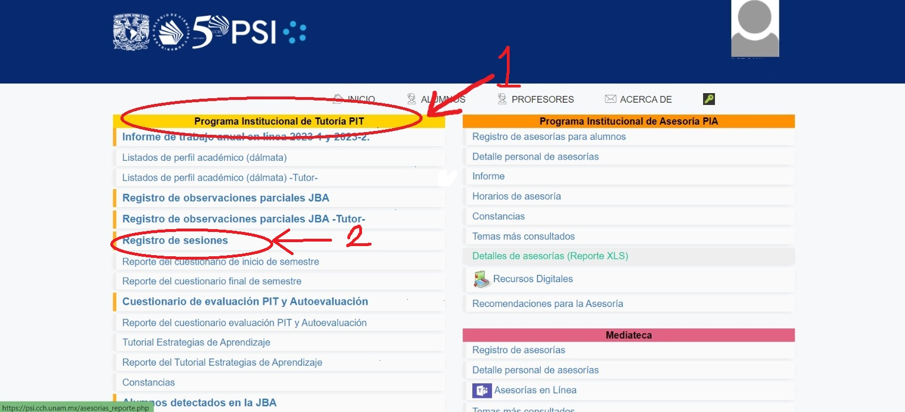
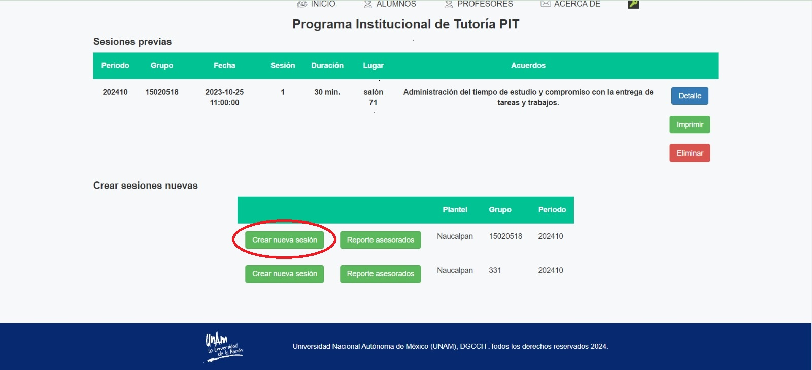
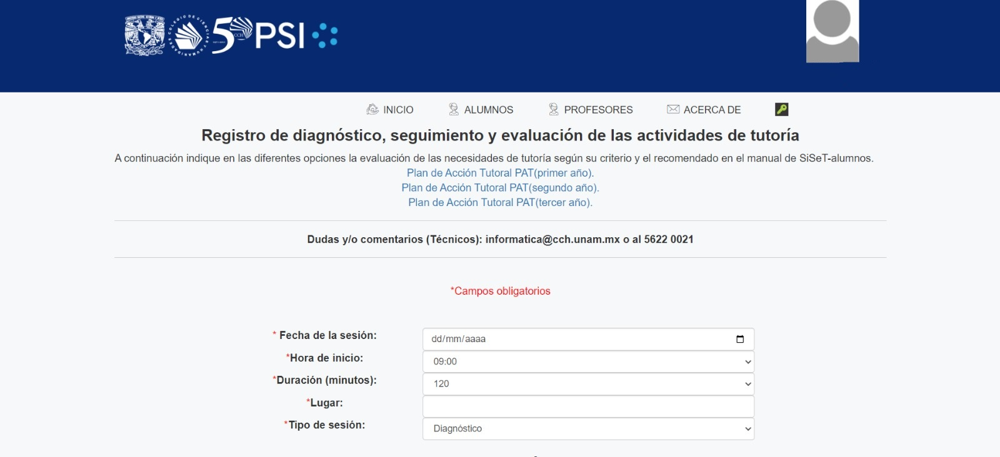

Este es un ejemplo de HTML por parte del PIT.
Paso 1.- Debemos acceder al PSI y dirigirnos al apartado de profesores.
https://psi.cch.unam.mx/profesor.php Paso 2.- Dentro de la pagina deberemos acceder al menu del programa institucional de tutorias(PIT) y dirigirnos al apartado de registros de sesion.
https://psi.cch.unam.mx/login.php Paso 3.- Dar clic en crear nueva sesion utilizando su usuario.
Paso 4.- Crea la sesion con los datos que se te pide.
.